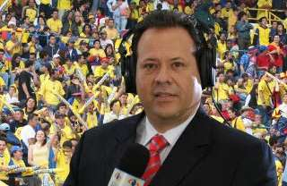

El 'Cantante del Gol' asegura que médicos se lucran con la COVID-19

El prestigioso narrador del fútbol colombiano, Javier Fernández Franco, conocido como 'El Cantante del Gol', aseguró que los médicos se lucran con los enfermos de COVID-19 en un programa del canal de televisión Win Sports.
La afirmación que ha generado polémica, la hizo Fernández durante un espacio en ese medio muy a pesar de que en el país se siguen registrando hechos de agresiones a médicos y a otros trabajadores de la salud por la infundada creencia de que se están lucrando con los pacientes de COVID-19.
'Algunos médicos parece que no estuvieran muy interesados en que las personas se curen rápido, sino que están interesados en los 30 millones que les llegan a los hospitales', señaló Fernández Franco.'Es benéfico tener a muchos enfermos de COVID en sus hospitales porque generan plata.No (se interesan) en curar realmente a la gente enferma', indicó 'El Cantante del Gol'.
Fernández también criticó la gestión del gobierno del presidente Iván Duque Márquez en la pandemia del nuevo Coronavirus en el país y, en especial, por la adquisición de las vacunas.
'Es una verdadera incertidumbre.Además, el ministro nunca dice cuándo llegan y, si llegan, llegan poquitas y que todavía no dice el laboratorio porque es reserva del sumario cuando eso es de interés de todo el mundo', dijo.
'El Cantante del Gol' también expresó que había padecido COVID-19, pero que se curó gracias a las alternativas que brindan los tratamientos de los médicos, los mismos a los que criticó porque supuestamente se lucran con los enfermos de esta pandemia.
'Yo me tomé los medicamentos cuando estuve con COVID porque ya lo tuve y no llegó a mayores.Y soy una persona hipertensa, soy una persona que tiene enfermedades que hubieran podido complicar todo', aseguró.
Para ver las declaraciones visite el siguiente enlace: https://twitter.com/FGarridoB/status/1352280434038763523
Posted On: 2021-01-23T08:25:00
Content Date: 2021-01-23
Download Date: 2021-05-13
Document ID: L0C04C9PY